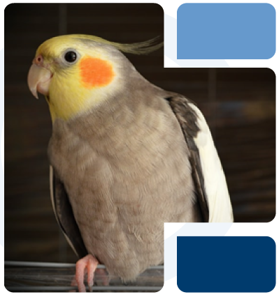

Caring for Your
Bird
Birds, ranging from the diminutive Cuban bee hummingbird to the towering ostrich, exhibit a fascinating diversity in size and characteristics. While most birds are adept fliers, some do not possess this ability. Each bird breed is inherently unique, particularly in terms of their relational needs and overall well-being. Regrettably, birds can experience emotions like sadness and depression, similar to humans.
Various factors, such as illness, loss of a companion, or growing boredom, can contribute to a bird's depression. Detecting signs of depression in your bird is crucial and may include reduced appetite, heightened irritability, aggressive behavior, or a change in the tone of their songs to a more solemn note. If you observe these symptoms, it's important to promptly inform your veterinarian. Early identification and treatment of these signs can significantly enhance the lifespan of your feathered friend, akin to addressing many other illnesses.
